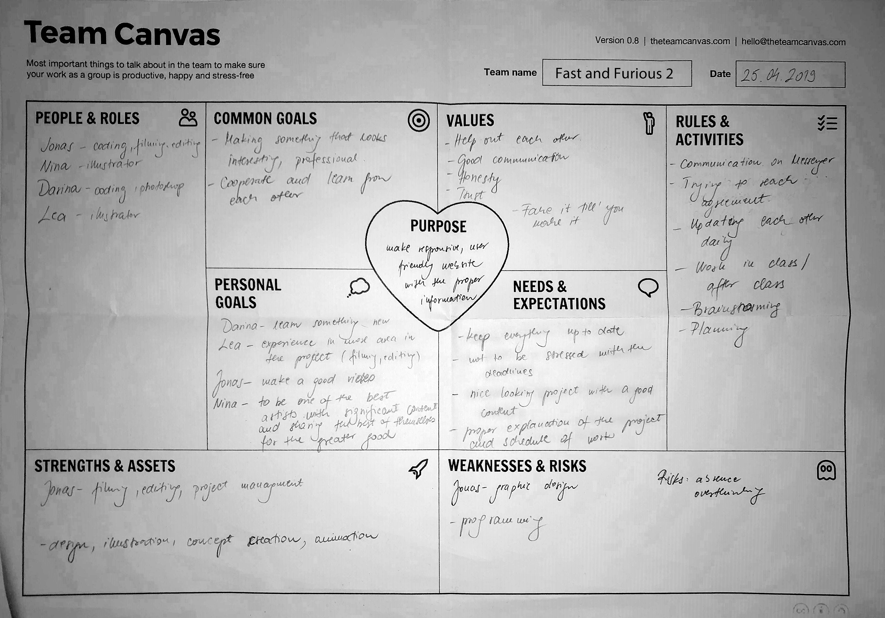

Team Canvas "I Bike Cph"
Team canvas helps team members to learn most basic things about each other and get aligned on their goals and expectations. It defines the main rules regarding to collaboration, communication and coordination on the project.
The case
The Copenhagen Municipality wants to create a website with information and an instructional video about biking rules in Copenhagen. The site has to follow the Copenhagen Municipality Design Guide. The guide website must be intended for tourist or long term visitors, or just for people who are new in Copenhagen.
In this project I was a part of a group called "Fast and Furious 2" with three other group members: Nina, Lea and Jonas. From the very beginning we had to define our weaknesses and strengths and to decide how to divide the process between us.
My role:
In this project my main role was to create the website - partly design ( together with Nina ) and the coding of HTML and CSS. The website is designed and developed for viewing on large screens.
When I'm looking at the team canvas now I can say that we fulfilled everything that was written in advance. There were very active communication through the whole process and all the members were very responsible and hard working.
My personal goal in this project was to learn something new and I think that this project made me more confident in writing HTML and CSS. There are of course, still many things to be learned and applied in practice.
